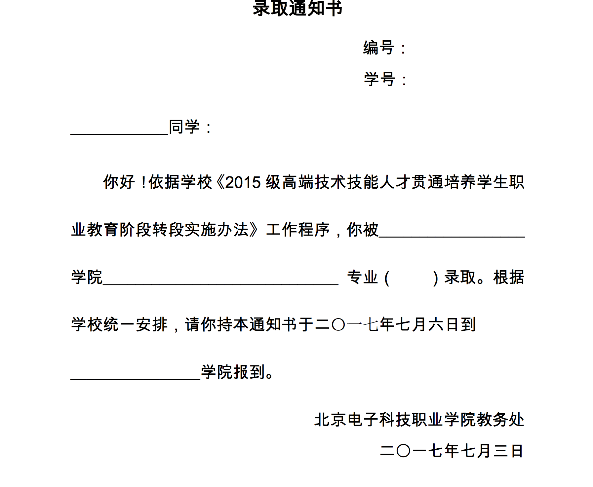
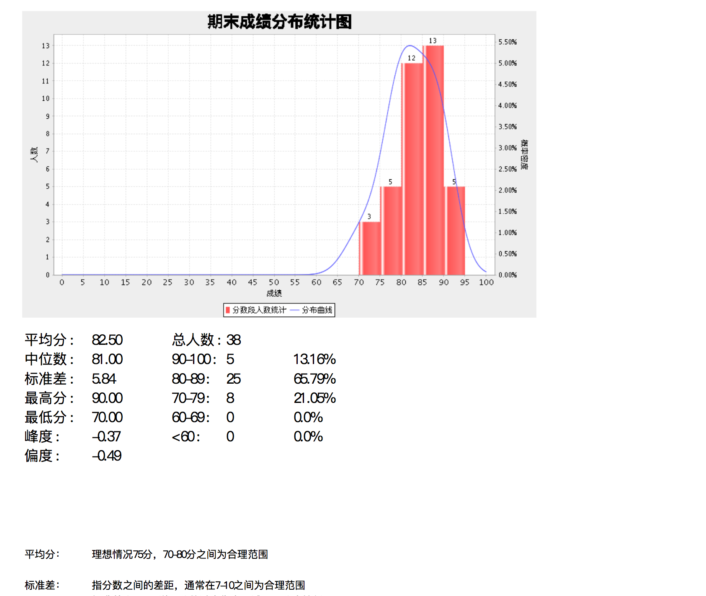

iText 是什么呢
iText是一个能够快速产生PDF文件的java类库。iText的java类对于那些要产生包含文本，表格，图形的只读文档是很有用的。
https://sourceforge.net/projects/itext/?source=directory
Features
- PDF generation
- PDF manipulation (stamping, watermarks, merging/splitting PDFs, …)
- PDF form filling
- XML functionality
- Digital signatures
紧接着下面的例子就是用的 PDF form filling 这个功能。
文档、实例等可以看官网详细查看： http://developers.itextpdf.com/
itext7 实现某大学录取通知书
在业务系统中，不可避免的会用到PDF来保存、展现数据。
有个需求是这样的，给每个新生发送电子版的录取通知书。由于内容、格式相对固定，可以制定好模板，然后填充 编码、学号、姓名等。
如下模板：

在maven中引入itext7:
|
|
贴下代码如下，只需要根据不同的模板传入相应的数据集合就OK了。
|
|
itext、jfreechart生成成绩分析图表，并写入成绩单pdf
浏览器中展示图表，一般都是用百度的ECharts(http://echarts.baidu.com/)来展现。
但是后台导出成绩单，必须要绕过浏览器才最方便。
在maven中引入itext5、jfreechart、ssj
|
|
示例如图：

中位数、标准差、峰度、偏度等使用 org.apache.commons.math3.analysis.function.*
直接函数调用，很方便。
结语
菜头叔每篇公号文章都有个 禅定时刻，很是喜欢。在此有样学样吧。
一个酒鬼的自述
“一个人活得拧巴是值得理解的，甚至是值得赞美的，这证明他内心还有冲突，并不甘于和人生妥协。但是，通过酒来发泄显得太过脆弱而虚伪，且对不起那瓶好酒。酒带给人们的应该是被压抑的快乐，而不是被压抑的痛苦。”
不是酒鬼，不咋饮酒，但是挺喜欢这句话。